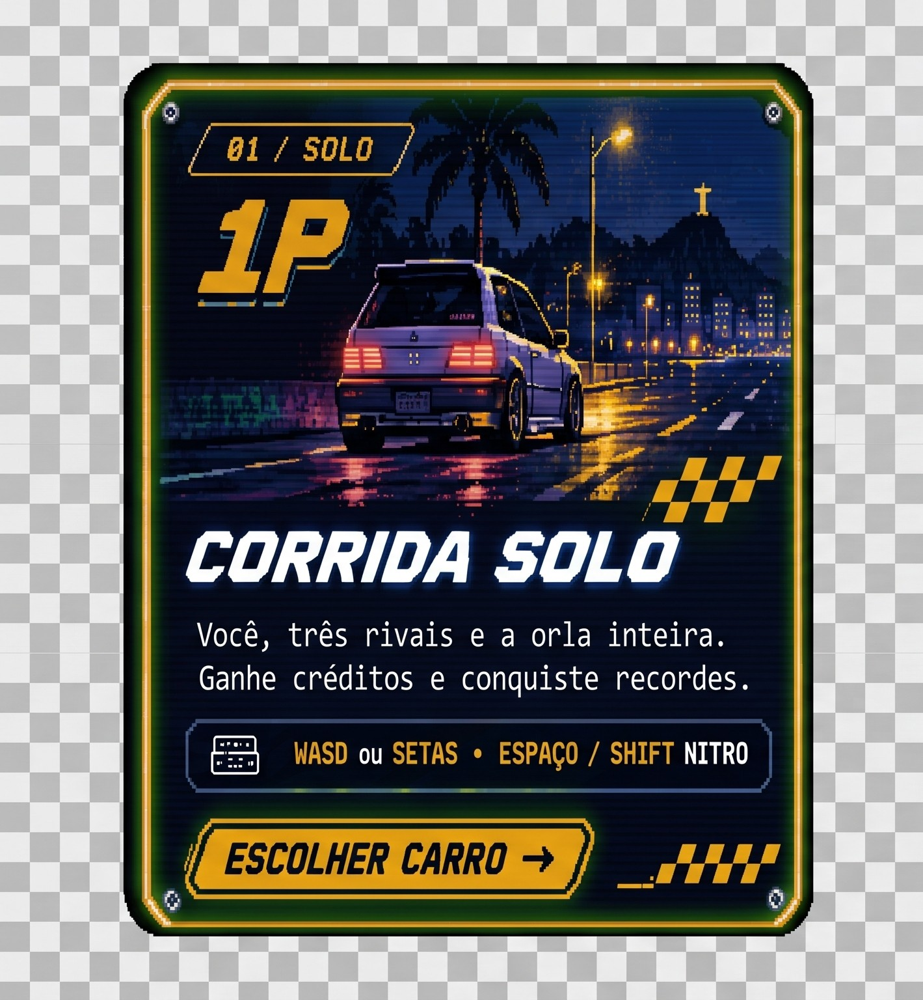
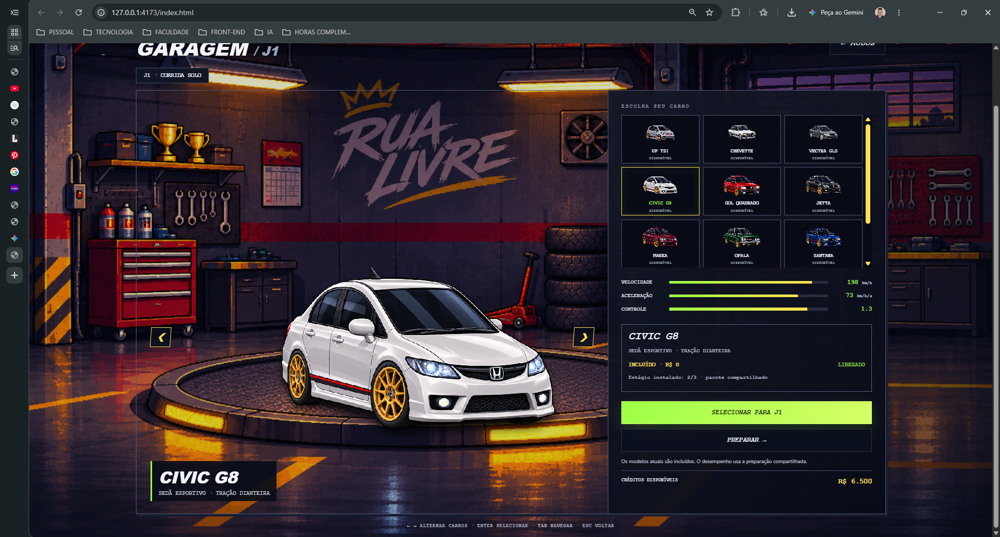

Corrida solo
Um jogador enfrenta os rivais e o trânsito. O resultado atualiza créditos e recordes.
APRESENTAÇÃO DO PROJETO
Como o protótipo virou um jogo de corrida 16 bits com garagem, progressão, cenário dinâmico e versus local.
Estado do projeto em novembro de 2026
UNICEPLACCentro Universitário

EXPERIÊNCIA COMPLETA
O jogo saiu de uma corrida isolada e ganhou um ciclo com escolha, preparação, disputa e recompensa.

PROGRESSÃO
A oficina virou uma tela funcional com seleção, atributos, créditos e preparação persistente.
10 modelosUP TSI, Chevette, Vectra, Civic, Gol, Jetta, Marea, Opala, Santana e Uno.
3 estágiosMotor e pneus usam os efeitos reais do sistema atual. O acerto individual permanece planejado.
Save localCarro, preparação, créditos e recordes continuam salvos no navegador.
CONCLUSÃO
O Rua Livre já oferece uma corrida completa, progressão persistente, dois modos e identidade brasileira. A base técnica permite adicionar novos mapas e veículos sem substituir o motor central.
ABRIR O JOGOUNICEPLACCentro Universitário